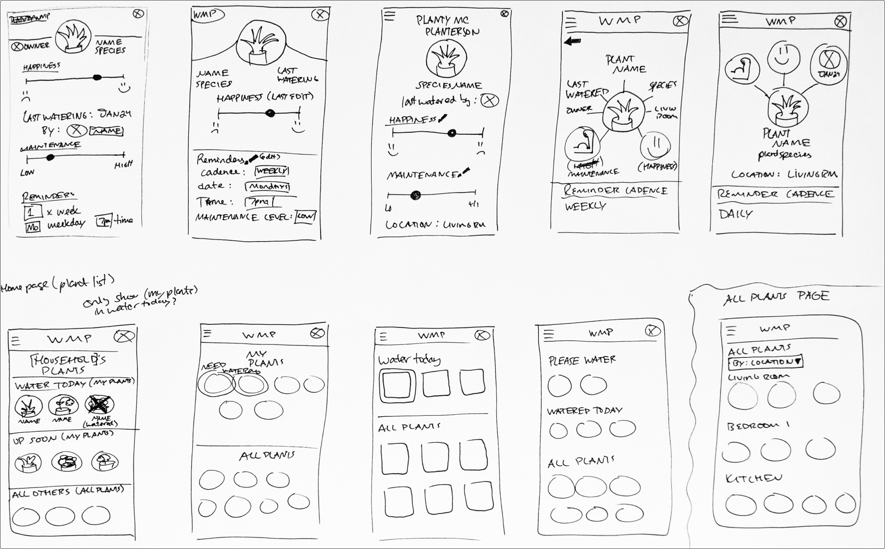
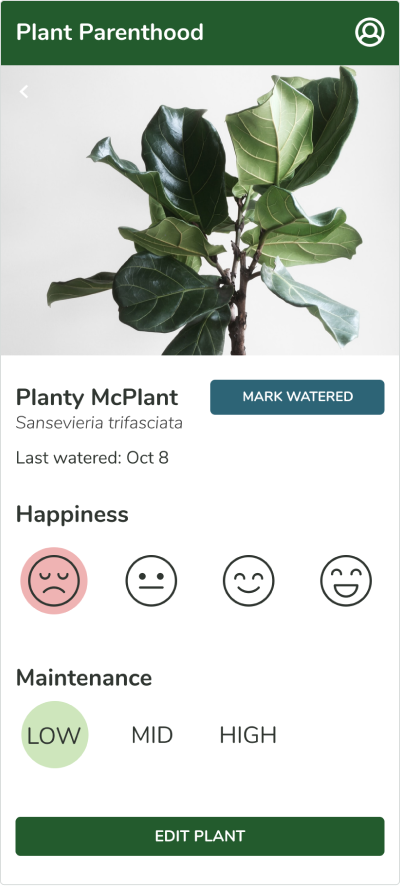
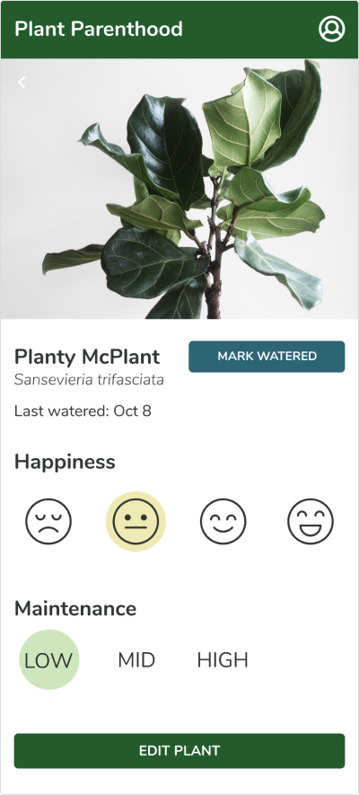
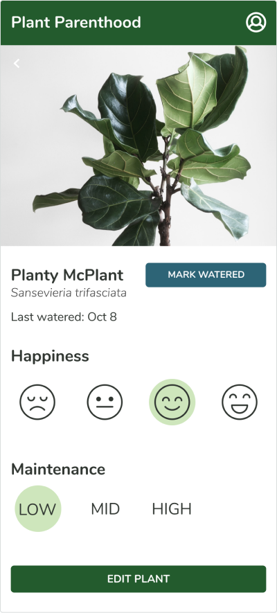
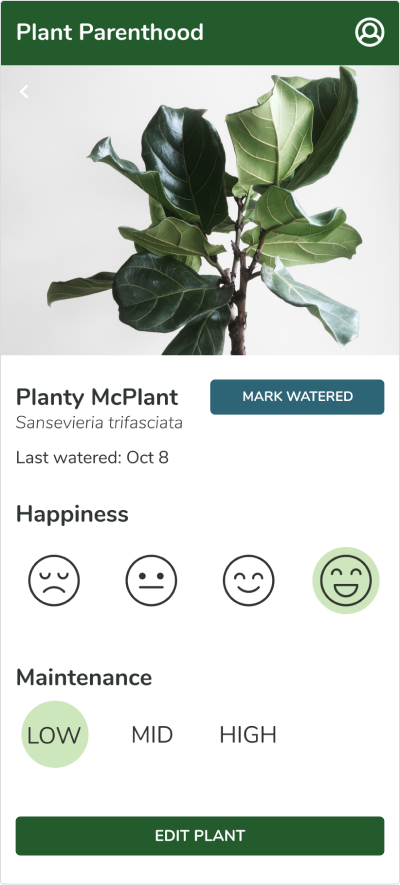

Plant Parenthood
Area of focus
- Aligning product design with user research
- Exploring unique solution possibilities
- Planning for future opportunities beyond MVP
Additional details
- 2 weeks for discovery & ideation
- Required to develop and ship MVP in 1 week
- Team included 1 designer, 1 UI dev, 3 react devs, and 1 backend dev
Problem:
Many of us want to be proud plant parents, but end up not having the time or attention span to keep those plants in great health.
Solution:
A plant care reminder app that does the hard work of scheduling for you, by using the happiness and health information you give us to send you periodic reminders to care for your plants.
Discovery: Do people really want their plants to thrive?
My first step was to take a deep dive into the product I was building and how it might be interpreted by users.
Questions I asked myself:
- If we were going to build this MVP based on the requirements listed, what might be lacking?
- How would it help different types of users, what would be frustrating for each of them?
- If the perfect product for this existed, what would it be able to do?
Key insights from user interviews
Plant owners care for their plants based on intuition rather than knowledge.
2 out of the 3 people I spoke to didn’t bother finding out how to properly care for their plants. They watered them based on trial and error.
There is not a big incentive to making sure your plants stay alive.
100% of the people interviewed feel that if their plant dies they can simply go buy another one. The likelihood they would use and continue to use this service was solely based on how easy we could make it and how much fun they had while using it.
Ideation: Let’s build something for people who want plants
Identifying the Issues: How can this product solve our user’s problems?
Obstacles removal
Potential users reported they would definitely have more plants if it was somehow easier to maintain them. This is 50% of our target audience.
We all have some desire to care for living things, what can this product do to enable these users to fulfill this desire?
Notification overload
People are inundated with notifications these days. We have to be careful that the benefits of being notified of something outweigh the annoyance.
How can we make sure that a thriving plant is enough of a benefit that our users won't abandon this product?
Task management
To some, task management is engaging and fun. For others, management of tasks may be a necessary evil.
How can we offer customization for the power users and the least amount of effort for the reluctant users?
Communication
Many potential users confessed that accidentally overwatering kills many of their plants due to poor communication.
How can we offer a simple solution to this common yet frustrating communication issue?
Designing within the product scope
The research I gathered led me in a different direction than the original scope of the project. Knowing that, I trimmed down many of my feature ideas in order to honor the project brief but kept everything I learned in mind while I built out my first prototype.
Getting creative with the possible layouts
Before settling on a single layout, I sketched out several different styles. Using something resembling the crazy 8s method, I tried to come up with unique and innovative ideas within a short time frame. My favorite is highlighted above.
The MVP Requirements:
- Log in & sign up flow
- Home page / all plants list
- Plant profile
- User profile
- Ability to set up watering reminders
Features users wished for:
- Reminders they don’t have to manually set up
- A history or change log for each plant
- Daily watering checklist
- Sharing with other household members
- Assigning locations to plants for better tracking
Getting insight into the user’s comfort zone
What I was testing:
- Onboarding - did I ask for enough information to ensure the user didn’t land on en empty home page?
- Home page - does the product highlight the features that the users are looking for? Do they understand those features?
- Customization - can the user customize their preferences and their plants in the ways they want?
The changes I made due to my discoveries
Final Designs
Plant Profile
   Key feature of Plant Parenthood
Using the happiness and maintenance levels the user sets for each plant, notifications are sent based on how much care the plant requires.
Being able to fix a mistake gives users flexibility. I wanted to make sure the user could change the plant’s name, species, photo, or delete the plant if it dies or was given away. Being able to update your user profile is essential, especially since we give users the option to skip most of the onboarding process.
In my initial user flows, I imagined a very detailed onboarding. I wanted the user to pre-fill all the information necessary to make sure they landed on a beautiful home page. It was a great lesson in how to make users disgruntled - something I am sure all designers need to learn one way or the other.
Desktop: Exploring how Plant Parenthood would function on other devices

What I learned...
It was a fantastic experience being the sole designer working with a team of developers. For the way that I learn, it was important for me to actually experience this kind of collaboration rather than learning it from instructors.
Understanding how design pairs with development.
The first lesson was understanding the difference between design and development. I had everything put together nicely to prepare for the actual development of my idea. Once I brought the devs in and learned their limitations, I had to quickly adapt. I also realized that the translation between UX & UI to product development is crucial. Getting everyone on the same page took time and patience.
Leveraging research to make improvements.
I learned how research can truly change the shape of an idea. One of the main goals of this project was to focus on user research. I learned so much about what users wanted and it changed everything about what I wanted to design. It was so helpful and a little painful to hear the criticism and feedback, but that also helped me generate a little bit of a thicker skin.
Adapting to restrictions and limitations.
Once I realized that I couldn’t use most of the feature ideas I had generated using research data, I was a bit disappointed. I did understand that this is something that happens all the time in the industry. New information, new ideas, interesting new data, and a myriad of other things can alter the course of product development without any notice at all. What is most important is to remain flexible and adaptable.